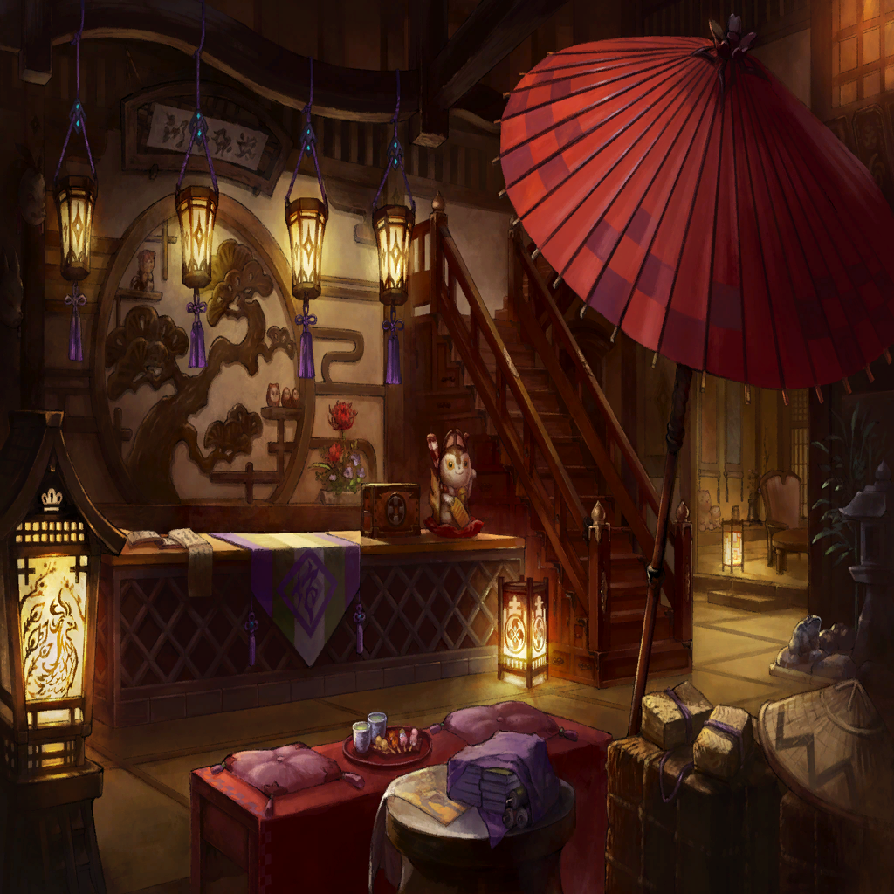

|
|  |

Jubei |
I see. So your resolve, then, is to inherit everything they were. |

Logi |
That's correct. |

Amane |
Wonderful. If anything should reaffirm my convictions, that would be it. You are indeed a man fully worthy of my trust. |
Logi |
Pardon? |
Amane |
We've divulged so much in such short order, it would be foolish of us to expect you to immediately accept and internalize it. These things take time, after all. |
Amane |
And yet, you are putting forth a genuine effort to listen, to understand, and to empathize with our plight. |
Amane |
Those are the markings of a truly trustworthy ally. And I do believe I am not alone in recognizing this. |
Amane |
I think we are all more than pleased to accept you into the fold. Thank you, Logi, for your consideration and your support. |
Logi |
No, thank you, Amane. I pledge, with unwavering resolution, that I will bring peace back to Wadatsumi. |

Edgar |
Well, you're sure nothin' if not earnest, Logi! |
Amane |
Perhaps you could learn a thing or two from him. |
Edgar |
Hey, I'm plenty earnest too, thankyouverymuch! |
Amane |
You certainly do have...virtues all your own, I'll give you that. I thank you for being here as well, Edgar. |
| Agatha |
So your motivation here is to help restore the way of life these people have lost? That's as Logi a sentiment as I've ever heard. |
Logi |
You think so? |
| Agatha |
You've always had a soft spot for such things. I seem to recall a certain promise about you, me, and Dias enjoying my stew again someday. |
Logi |
Oh! |
Amane |
Like Celis always said, "Those who can't appreciate the value of their everyday life can't protect their everyday life." |
Amane |
Clearly, the apple doesn't fall far from the tree. |
Logi |
Heh. I guess you got me there. |

Ugachi |
With your arrival, the tides truly have changed here. We can finally bring back Kagutsuchi and restore Sumeragi. |
Ugachi |
It's no longer a hopeless endeavor. So tell me, Logi, are you committed to learning and mastering the sacred art of Kagutsuchi? |
Logi |
You can count on me! |
| Agatha |
How is he to do that, though? |
Amane |
The first step is to restore Mikaboshi to its original, complete state. |
Logi |
Oh, is that...Mikaboshi? What are you going to—? |
Amane |
Mikaboshi's consciousness presently resides within me. I will now transfer it to this stone. |
Amane |
Ngh! |
Amane |
Still not enough? I must...concentrate. I must...dive...deeper. |
Edgar |
Ah! What is this?! |
Amane |
It's like I'm losing a portion of myself I've grown very attached to. But, no! This is no time for empty sentiment! |
Amane |
I must say farewell here, as much as it pains me to do so. |
Amane |
Return, Mikaboshi, to where you belong! |
Logi |
...! |
Amane |
But even after you've returned, Mikaboshi...let's continue to walk together. This is not your journey or mine, but ours. |
Amane |
Let us take the first steps toward saving Wadatsumi, hand in hand. |
 |

Mikaboshi |
Are you sure that's what you want? |
Mikaboshi |
I know it's what's best for Wadatsumi, but choosing this path may cost you more than you've ever lost before. |
Mikaboshi |
Are you still willing to take my hand, despite all the risks? |
Amane |
Absolutely. |
Amane |
Doing so will fulfill not only the wishes of all the people of this land... |
Amane |
...but my wishes as well. |
Mikaboshi |
Thank you, Amane. |
Logi |
What... What just happened? |
| ??? |
I'm truly grateful to you, Amane. I've become whole again. |
Amane |
No thanks are needed. This is all for the sake of Wadatsumi and the wellbeing of its people. |
Amane |
Besides, I'd do anything for a friend. And you are, unequivocally, a true friend. |
Logi |
Amane? Who are you speaking—? Ah! |
Logi |
Who in the...? |
|
Logi |
Wha— Wh-who was that? |
Amane |
There we have it. We've successfully restored one of the Sacred Three of Wadatsumi, the Spirit Stone Mikaboshi, to its rightful state. |
Amane |
Captains Ugachi and Jubei, may I entrust you to keep things under control in our absence? |
Jubei |
Not a problem. You just focus on attaining Kagutsuchi. |
Ugachi |
This isn't the first time I've had to wait on you, and I don't like it one bit, so get moving already! |
Ugachi |
You know what needs to be done. |
|
Right! |
Amane |
Let's do this, then, Logi. We must seek out the lost sacred art of Kagutsuchi. |
Logi |
Of course. In the name of restoring peace to Wadatsumi... |
Logi |
I will make certain to master that art! |